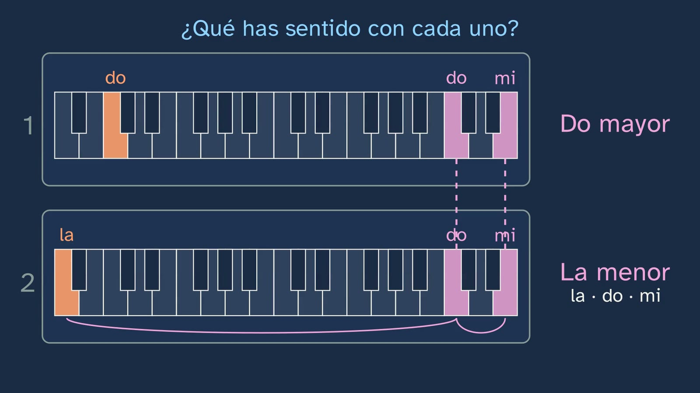
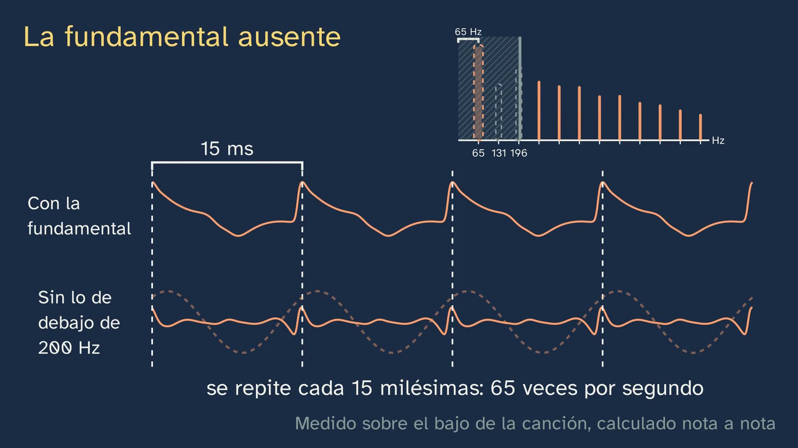

The bass, the note you can't see
In a nutshell
This is the third class of the topic "A song, layer by layer": it opens up the bass layer of the channel's song. Its message fits in one line: the bass is the floor of the song (its note decides which chord you hear and, locked to the kick drum, it drives the rhythm), and you hear it on a phone even though the speaker can't play those notes, because your brain gets the note from its harmonics: the missing fundamental. All the music was composed and synthesised by the channel, note by note, with the song from class 1 (eight bars in C major, at 90 beats per minute). Malik speaks and never sings, and no song with an owner is played.
After the solutions to class 2, the hook, with its context (1:57): the speaker in most phones is tiny and can hardly play the lowest notes, the bass notes; the song plays through a filter that imitates that speaker, and the bass is still there. How? The answer comes in the second half.
First, the instrument (2:54): the most common electric bass has four strings, E, A, D and G, tuned like the four lowest strings of a guitar but an octave lower. A string vibrating in slow motion explains frequency and the hertz (one back-and-forth per second), and with them the octave: the bass's E vibrates 41 times per second and the guitar's, twice as many (3:18). The four strings fall below what a phone's speaker plays (4:13). The history, briefly: Paul Tutmarc's bass (Seattle, 1930s), which never succeeded, is considered the first; the one that did is Leo Fender's Precision (1951), named that because, with frets, the note comes out precise (4:25).
Next, what the bass does. The first note of each bar of the bass is the name of its chord, and not only in this song: in 739 Billboard chart hits, nearly nine out of ten chord changes start with that note in the bass (5:30). Students predict and listen (5:54): with C and E on top, the bass on C gives C major, and on A, A minor; nothing changed on top. They put what they feel into words (criterion 1.2), and only afterwards hear that to an ear used to our music, minor usually sounds darker. On the class 2 grid, three of the bass's four notes fall with the kick drum; what starts at the same time, the brain tends to group together (one of the cues from class 1), and students check it by pulling them apart by half a pulse (7:42).
The second half solves the mystery. Inside a note (9:51): a string vibrates whole, in halves, in thirds… all at once, and each vibration is a harmonic, one, two, three times the fundamental. The measured spectrum of the bass's first C: 65 Hz and its harmonics, every 65 Hz (11:01). The fundamental on its own and the whole note: the same note, a different timbre (11:29). Then the experiment (12:02): students predict what they will hear if the fundamental is removed; then everything below 200 Hz, as on a small phone. It is still C: the remaining harmonics are still 65 Hz apart, the wave still repeats 65 times per second, and with that clue the brain hears the note (12:55). The typical mistake is taken apart and the evidence given: Seebeck noticed it with a laboratory siren in the 1840s, and Schouten confirmed it in 1940, at the Philips laboratories; exactly how the brain does it is still being researched (13:33). Musicians make use of it: virtual bass, and the channel's bass, which has extra harmonics on purpose (14:23).
To finish, the bass clef, read like a staircase from the fourth line, with the eight that reminds you that the electric bass sounds an octave lower than written (15:44); a reading of the bass's first bar (16:31); three exercises, and the open question: do low sounds carry the rhythm out of habit, or because of something about the ear?
Objective. By the end, students will know what the bass does (the note that decides the chord and the floor of the rhythm), why it usually goes with the kick drum and why they hear it on a phone even though its speaker can't play those notes; and they will be able to read some notes in bass clef.
For readers outside Spain: the Bachillerato is the last two years of secondary school (ages 16–18). Musical Language and Practice is a first-year subject in the Music and Performing Arts pathway of the Arts strand of the Bachillerato. The BOE is Spain's Official State Gazette, where every law and decree is published. In Spain the notes are named with a fixed do (do, re, mi, fa, sol, la, si); this sheet uses letter names (C, D, E, F, G, A, B). The video is in Spanish, with English subtitles. Spanish documents (the decree) are quoted in our translation; English sources are quoted in the original. Decimals are written here with a point (88.95), not with the Spanish comma.
Curriculum
Spain's Royal Decree 243/2022, annex II, Musical Language and Practice, a subject in the Music and Performing Arts pathway of the first year of Bachillerato. The BOE's consolidated text was checked on 28/10/2026. Our translation of the official Spanish text.
| Element | What the decree says | Where the class works on it |
|---|---|---|
| Core knowledge (block A) | "Harmony: the physical phenomenon of harmonics; the circle of fifths; the main harmonic functions in tonality; chords…" | The harmonics of a string and the spectrum of a note (10:14–11:29); the missing fundamental (12:02); the bass note decides the chord (5:54). Chords, from the inside, in class 4 |
| Core knowledge (block A) | "Musical representation of the parameters of sound." | Frequency in hertz (3:18); the spectrum, which draws timbre (11:01); the wave that repeats (12:55) |
| Core knowledge (block A) | "Musical elements in the Western musical tradition, in folk music and in urban popular music." | The electric bass and its history (4:25); the bass in 739 Billboard chart hits (5:30); the bass locked to the kick drum (7:42) |
| Core knowledge (block A) | "Conventional notation (traditional writing) and non-conventional notation…" | The bass clef (15:44); the bass on the sixteen-step grid (7:42) |
| Core knowledge (block B) | "Strategies for listening to or viewing musical works or excerpts." | The whole class: the bass alone, the chord that changes with the bass, locked and pulled apart, the note without its fundamental, the phone filter |
| Core knowledge (block B) | "Reading, internalising and memorising simple musical structures." | The reading of the bass's first bar (16:31) |
| Specific competence 1 | "To cultivate active listening…" | The whole class; the subjective side, at 6:30 (how did each chord feel?) |
| Specific competence 2 | "…analysing and comparing scores in various notations…" | The bass in the roll, on the grid and on the staff; the spectrum as a drawing of sound |
| Specific competence 3 | "To apply musical performance strategies, using reading as a means of approaching the work…" | Reading in bass clef |
| Criterion 1.1 | "To recognise and describe the different parameters and musical elements of a work, applying active listening strategies and using suitable specific vocabulary." | Frequency, hertz, octave, harmonic, fundamental, spectrum and timbre; students predict before listening (5:54, 8:54 and 12:02) |
| Criterion 1.2 | "To describe the sensations that music produces and their possible link with the characteristics of the work, reflecting on subjective aspects inherent in musical listening." | How did C major and A minor feel? (6:30); locked or pulled apart (9:20) |
| Criterion 2.1 | "To describe the main characteristics of the musical elements (melody, rhythm, harmony, timbre, etc.) present in scores in conventional and non-conventional notation…" | The bass in the roll (5:01) and on the grid (7:42); timbre in the spectrum (11:41) |
| Criterion 3.1 | "To read simple scores independently, with or without the support of listening." | The bass clef and the reading of the first bar (15:44–16:58) |
What the channel adds. No curriculum names the missing fundamental or virtual bass: they are the channel's way of making "the physical phenomenon of harmonics" and the representation of the parameters of sound concrete, with something students live every day with their phones (the topic sheet explains it). Major and minor chords are only named here: they are built in class 4.
How the class is built
Video chapters
About nineteen minutes. It is a concept class with the department's model, listen, see and do: each idea is heard before it is named and seen on the same clock as the sound (the roll, the grid, the strings and the spectrum light up with what is sounding, and nothing lights up without sound). Three experiments follow the same recipe: predict, listen and explain.
| Chapter | What happens | Why this way |
|---|---|---|
| What we'll see (0:00) | Malik introduces the class; the topic map; paper, pencil and, if possible, headphones. | The map, in every class. |
| What you already know (0:26) | Where did the song's kick drum fall? On the class 2 grid. | The kick drum comes back today, with the bass. |
| The solutions (0:54) | The three exercises from class 2, with the question on screen. | Short, with their drawing. |
| A mystery in your pocket (1:57) | A phone's speaker can hardly play the low notes; the song through its filter, and the bass is still there. | The hook, with its context; solved in the second half. |
| The bass (2:54) | The instrument and its four strings; frequency, the hertz and the octave, with a string in slow motion; the phone's speaker on the hertz axis; Tutmarc and the Precision; the song's bass on its own, and the note that names the chord (Billboard). | Explaining with the object; frequency seen vibrating before it is measured. |
| The bass decides the chord (5:54) | C and E on top; below, C or A: C major or A minor; how each one feels; the floor of the song. | Predict, listen and name; the subjective side before what is usually said. |
| The bass and the kick drum (7:42) | Three of four notes with the kick drum; the fourth leads to the next chord; what starts together is grouped; locked and pulled apart. | The class 1 cue, checked by ear. |
| Inside a note (9:51) | The string vibrates whole, in halves, in thirds…: the harmonics; the measured spectrum of the first C; the fundamental alone against the whole note: timbre. | The why before the experiment: without harmonics, there is no mystery to solve. |
| The missing note (12:02) | What will you hear without the fundamental? Without it, and without anything below 200 Hz: still C; the wave repeats the same. | The central experiment, with its explanation drawn. |
| How do we know? (13:33) | The typical mistake; Seebeck and Schouten; virtual bass and the channel's bass; the song with the filter and whole; the reflection. | The evidence for what is claimed, and how it is used today. |
| The bass in notation (15:44) | The bass clef, step by step; the eight underneath; the reading of the first bar. | A reading in every class. |
| Practice (16:58) | Three exercises; the open question; the next class; goodbye. | The solutions, in class 4. |
Plan for a 50-minute lesson
Designed to be watched in class with good speakers: the bass and the experiments in the second half sound poor on laptop speakers (which is exactly what the class explains). If possible, students bring headphones for exercise 1.
| Minutes | What to do |
|---|---|
| 0–4 | No video. A song the group knows, first through a phone's speaker and then through the classroom speakers. What changes? Write it on the board. |
| 4–14 | Video to the end of "The bass" (5:54). During the song's bass (5:01), sing quietly the first note of each bar. |
| 14–22 | "The bass decides the chord" (5:54–7:42). Pause at the prediction (5:54) and at "how did it feel?" (6:30): hands up, with reasons. |
| 22–28 | "The bass and the kick drum" (7:42–9:51). At the prediction about pulling them apart (8:54), everyone writes down their answer before hearing it. |
| 28–40 | "Inside a note" and "The missing note" (9:51–13:33). The prediction at 12:02, in writing and before hearing it; compare with what is heard. |
| 40–47 | "How do we know?" and the bass clef (13:33–16:58), with the reading on the worksheet. |
| 47–50 | The open question, all together. |
Typical mistakes and how to deal with them
- "If the speaker can't play the note, you can't hear it." This is the mistake of this class (13:33). The speaker doesn't play the fundamental, but it does play the harmonics, and the brain hears the note that ties them together: the missing fundamental. The class says it as plainly as that and doesn't explain the mechanism, which is still being researched (Oxenham, 2012 and 2023).
- "If you remove the fundamental, you hear a higher note." This is the trap option in the experiment (12:02). What changes is the timbre (thinner), not the pitch. Looking at the wave helps: with the fundamental and without it, it repeats just as fast (12:55).
- "The notes on top decide the chord." The same two notes, C and E, are C major with a C below and A minor with an A (5:54). In Spanish, the class says "the note that names the chord, its fundamental" (Spanish apps say raíz, a calque of the English root, which the Spanish dictionary doesn't list with that meaning).
- Confusing the fundamental of a note with the fundamental of a chord. They are two things that share a name: the lowest frequency of a note (physics) and the note that names the chord (harmony). The class keeps them apart: the first half is about the chord, the second about the inside of a note.
- "An octave is twice as low." It is half as many vibrations per second: the guitar's E vibrates 82 times, the bass's 41 (3:18). An octave lower is half the frequency, not "twice as low".


Questions and answers
Stop and think (in the video)
- Where in the bar did the song's kick drum fall? (0:26). On one, between two and three, and between three and four.
- With C and E on top, and below first a C and then an A, will you hear the same chord twice? (5:54). No: with C below it is C major; with A, A minor (A, C and E).
- How did each one feel to you? (6:30). It is a question about sensations (criterion 1.2): every answer is valid if it is reasoned from what happens in the music. To an ear used to Western music, minor usually sounds darker.
- What will happen if we pull the bass away from the kick drum by half a pulse? (8:54). They no longer sound like one hit, but like two separate things. Which one you like better is up to each person.
- Without the fundamental, what will you hear: nothing, a higher note or the same note? (12:02). The same note, the same C, thinner.
- The reading: what are the four notes of the bass's first bar called? (16:31). C, C, G and B.
The student worksheet: in bass clef. 1. The fifth line: A. 2. The fourth space: G. 3. The third line: D. 4. The second space: C. 5. The first line: G.
Practice (solutions at the start of class 4)
- Play a song through your phone's speaker, and then through headphones, at a moderate volume: what happens to the bass? It depends on the phone and the song. Most often: through the speaker, the bass sounds thinner and has less body, but its notes can still be heard (the missing fundamental); through headphones, which do play the low frequencies, it sounds fuller. If on some phone the bass almost disappears, that is a valid answer too: some basses have few harmonics.
- A note has harmonics at 220, 330, 440 and 550 Hz: work out its fundamental, and explain why you would hear it even though it isn't sounding. 110 Hz: the harmonics are 110 Hz apart (220 = 2 × 110, 330 = 3 × 110…). You would hear it because the remaining harmonics are still 110 Hz apart, the wave repeats 110 times per second, and with that clue the brain hears the 110 Hz note even though it is missing: the missing fundamental.
- In the second bar, the bass plays A, A, E and G, in the same boxes as in the first: write the kick drum and those four notes on the grid, and say which note leads to the next chord. Kick drum on steps 1, 7 and 11 (on one, between two and three, and between three and four). Bass: A on step 1, A on 7, E on 11 and G on 15. The note that leads to the next chord is the G, the one on its own: it is next to F, the note of the chord in bar 3.
Keep thinking. In our music, what marks the rhythm most, the kick drum and the bass, usually sits low, and the melody on top: is it habit, or something about the ear? There is no settled answer. Hove et al. (2014) proposed that the ear notices better when a low note starts; Wojtczak, Mehta and Oxenham (2017) did not confirm it. Both are small studies (12 to 18 people per experiment), and the channel does not present them as proof of anything: they show that the question is serious and still open. Three paths for the conversation: music in which the rhythm is on top (handclaps, the clave, the hi-hat); music without a bass; and what it would take to separate habit from the ear (listeners from other traditions). If you have a good discussion, tell us about it on the Ágora, in this class's teachers' thread.
A classroom activity
The bass, on the phone (about 15 minutes, in pairs; works on listening (block B) and criteria 1.1 and 1.2).
- Listen (5 minutes). Each pair chooses a song with a clear bass and listens to it through a phone's speaker and through headphones. They write down what changes, with the class's vocabulary: fundamental, harmonics, timbre.
- Compare phones (5 minutes). Two pairs with different phones listen to the same song. On which one is the bass heard better? Why might that be (speaker size, a separate bass speaker, volume)?
- All together (5 minutes). Did the bass disappear on any phone? What do the songs in which the bass holds up best have in common?
For teachers: what they will find. On almost every phone, the bass sounds thinner but its notes can be recognised. With very pure basses (some sub-basses in electronic music) it can almost disappear: that is the bass "without extra harmonics" at 14:23. At high volume, the speaker distorts and adds harmonics of its own: a moderate volume is better, also to look after their hearing.
Open resources
- Audacity, free and open-source software for Windows, macOS and Linux, with a spectrum analyser in its "Analyze" menu: https://www.audacityteam.org. You can record a note from a classroom instrument and see its harmonics.
- MuseScore, a free score editor, to write and hear the bass in bass clef: https://musescore.org.
- The McGill Billboard Project data (CC0), with the chords of hundreds of hits annotated by hand: https://ddmal.ca/research/The_McGill_Billboard_Project_(Chord_Analysis_Dataset)/.
- Schouten's article (1940), in the open archive of Philips Technical Review: https://worldradiohistory.com/Archive-Company-Publications/Philips-Technical-Review/40s/Philips-Technical-Review-1940.pdf.
Notes for teachers
- The song's bass is not an electric bass. It is a synth bass, calculated note by note, and the class says so (5:01). It has extra harmonics on purpose, so that it can be heard on a phone (14:23): the same principle as virtual bass.
- How much phones play. They don't all cut off the same way: most play very little below about 100 or 200 Hz, depending on the model (measurements by Notebookcheck, 2026, and DXOMARK; the physics, in Larsen and Aarts, 2002: a small speaker and deep bass are "physically contradictory" demands). Some phones have a separate bass speaker. The class says "most" and "depending on the model".
- The Billboard figure is the channel's own calculation. On the open annotations of the McGill Billboard Project (739 Hot 100 songs, 1958-1991, annotated by experts), 88.95 % of chord changes start with the note that names the chord in the bass; on the first beat of the bar, 92.07 %. The program that calculates it is in the channel's repository (this class's
datos/billboard_bass.py), and two open music theory textbooks confirm it (Open Music Theory and Foundations of Aural Skills). - The bass and the kick drum. That they go together is a craft practice documented by producers and teachers, not a measured law: in other styles the bass looks for exactly the gaps in the kick drum. The class says "in many of the songs you hear".
- Tutmarc. All the sources draw on the same researcher, Peter Blecha (HistoryLink). That is why the class says "is considered the first" and "relatively few were sold", not "was the first" or "hardly any were sold".
- Seebeck and Schouten. Seebeck used a laboratory siren (a disc with holes spinning in front of a jet of air), and his dispute with Ohm (1841-1843) is where the problem starts (Turner, 1977). Schouten, at the Philips laboratory in Eindhoven, removed the fundamental from synthesised sounds and the note stayed the same; he called what was heard the residue. The example he gives himself is the telephone of his day, which never transmitted the fundamental of a man's voice. How the brain does it is still unresolved.
- The eight on the clef. The electric bass sounds an octave lower than written. The eight under the bass clef reminds you of it, but many bass scores take it for granted and leave it out.
What the class leaves out, and why
- How major and minor chords are built. That is class 4, "Chords, from the vibrating string", which starts from today's harmonics.
- Inversions (a chord with another note in the bass). They move to topic 3, where they fit with their explanation: here, all that matters is that the usual bass note is the one that names the chord.
- The mechanism of the missing fundamental. There are several theories (the periodicity of the wave, harmonic patterns) and none is definitive: the class gives the clue you can see (the wave repeats the same) without presenting it as "the" explanation.
- The double bass. It is named as the instrument the electric bass gradually replaced; its history and technique don't fit in this class.
- "Your phone uses virtual bass". There is no source that a specific phone does it: the class talks about programs and about the channel's bass.
Sources
Curriculum
- Royal Decree 243/2022, annex II, Musical Language and Practice, consolidated text: https://www.boe.es/buscar/act.php?id=BOE-A-2022-5521.
The instrument and its history
- Encyclopaedia Britannica, "Bass guitar": https://www.britannica.com/art/bass-guitar.
- P. Blecha (2005). "Tutmarc, Paul (1896-1972)". HistoryLink, essay 7479: https://www.historylink.org/file/7479.
- The Metropolitan Museum of Art, "Precision Bass", Fender Electric Instrument Company, 1951 (record 788002, in the Internet Archive).
- J. Owens. "Legendary Lows: The Precision Bass Story". Fender: https://www.fender.com/articles/behind-the-scenes/legendary-lows-the-precision-bass-story.
- C. L. Fender. US design patent D169,062 (1952), public domain: https://patents.google.com/patent/USD169062S.
Frequency and phones
- Bureau International des Poids et Mesures, The International System of Units (CC BY 4.0), and Royal Decree 2032/2009: the hertz.
- E. Larsen and R. M. Aarts (2002). Reproducing low-pitched signals through small loudspeakers. Journal of the Audio Engineering Society, 50(3), 147-164.
- Notebookcheck (August 2026) and DXOMARK, phone speaker measurements.
The bass and the chord
- J. A. Burgoyne, J. Wild and I. Fujinaga (2011). An expert ground truth set for audio chord recognition and music analysis. ISMIR 2011; and the McGill Billboard Project data (CC0).
- M. Gotham, C. Hamm and K. Shaffer. Open Music Theory (CC BY-SA); T. Chenette (2022). Foundations of Aural Skills (CC BY-SA 4.0).
The missing fundamental
- J. F. Schouten (1940). The perception of pitch. Philips Technical Review, 5(10), 286-294.
- R. S. Turner (1977). The Ohm-Seebeck dispute, Hermann von Helmholtz, and the origins of physiological acoustics. The British Journal for the History of Science, 10(1), 1-24. doi:10.1017/S0007087400015089.
- W. A. Yost (2015). Psychoacoustics: A brief historical overview. Acoustics Today, 11(3), 46 ff.; G. D. Langner (2015). The Neural Code of Pitch and Harmony. Cambridge University Press, ch. 3.
- A. J. Oxenham (2012). Pitch perception. The Journal of Neuroscience, 32(39), 13335-13338. doi:10.1523/JNEUROSCI.3815-12.2012; and A. J. Oxenham (2023), open-access review (CC BY).
- US patents 5930373 (MaxxBass, 1999) and 6134330 (Philips, "Ultra Bass", 2000): virtual bass.
The bass clef
- Real Academia Española, Diccionario de la lengua española, "clave de fa en cuarta"; Open Music Theory.
The open question
- M. J. Hove et al. (2014). Superior time perception for lower musical pitch explains why bass-ranged instruments lay down musical rhythms. PNAS, 111(28).
- M. Wojtczak, A. H. Mehta and A. J. Oxenham (2017). Rhythm judgments reveal a frequency asymmetry in the perception and neural coding of sound synchrony. PNAS, 114(5).
About this class
GinCol Lab is a free science channel for curious minds. Malik is an illustrated character, not a real person, and his voice is synthetic: computer-generated with Microsoft Azure AI Speech and not imitating any known person. All the music was composed by the channel, note by note; its sounds come from numpy, pedalboard and Stable Audio 3 (Powered by Stability AI), and no one else's recording is played. The illustrations of the bass, the guitar, the phone, the head, the headphones, the stopwatch, the siren and the paper with the pencil, and those of the drum kit, which come from class 2, were created with OpenAI's image generation; the drawing of the Precision is figure 1 of its patent, in the public domain. The script and this sheet are written by an AI (Claude, by Anthropic) and reviewed by a person before publishing; every fact has been checked in two sources or in the original. This English version was translated by the same AI and reviewed by a person.
This sheet is published under a Creative Commons Attribution 4.0 licence: you can copy it, adapt it and use it in your classroom, crediting GinCol Lab. The images come from the video's board: the drawings, spectra and scores are the channel's; the illustrations were made with OpenAI's image generation. The figures and the quotations belong to their authors.
How to cite this sheet
GinCol Lab (2026). The bass, the note you can't see. GinCol Lab teacher sheet: Musical Language and Practice · 1st year of Bachillerato · Topic 1: A song, layer by layer · Class 3 of 8. https://gincollab.github.io/aula/en/lenguaje-y-practica-musical/t01-c3/. CC BY 4.0.
GinCol Lab teacher sheet · CC BY 4.0 · Source and errata